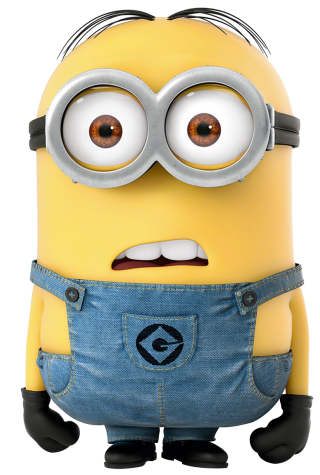
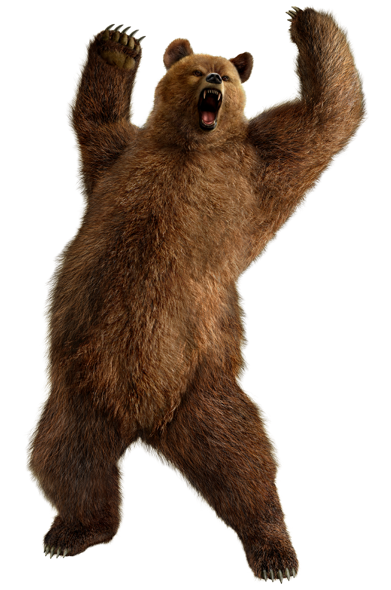

ЕКИП

Както казах по всяко време се търси стафф, няма значение от годините, важното е да знаете какво правите (и всепак да имате поне 10/11). Какво прави екипът в такъв сървър? Повече информация ще откриеш най-долу.
КИНО ВЕЧЕРИ

В сървърът се огранизират кино вечери на филми които вие изберете. Обикновенно се правят няколко пъти в седмицата или различно. По всяко време търсим хора които могат да пускат да гледаме филми заедно.
ЗАЩО НАС?

Както знаете в дискорд има много български сървъри които са за гейминг обществото, но и са създадени преди нашият. Поради тази причина ще ви дам няколко причини да изберете нас. Първо, ние разполагаме с над 20 категории за игри, във всяка от тях има нужните категории за дадена игра. Второ, всички правила се спазват от всеки един член на сървърът както и всеки един от екипът. Ако видите член от екипа или член от групата да не спазва някое правило, веднага се съобщава в канала "оплаквания", ако не съобщите това е ваш проблем. Трето, ние имаме кино вечери в които има пълна тишина и можете да гледате на спокойствие. Четвърто, по всяко време се търси екип, а това означава, че когато и да влезеш ще можеш да станеш член от нашият екип. Пето, правят се много често раздавания разбира се на работещи неща не като в другите сървъри за "раздавания". Шесто, въпреки че сме гейминг общество имаме категория за гифета и снимки. Седмо, имаме канал в който се съобщава за безплатни игри, разбира се автоматично. Мисля, че тези седем причини са достатъчни, дано да съм те убедил да избереш нас.
КАКВО ПРАВИ ВСЕКИ ЧЛЕН ОТ ЕКИПЪТ СПОРЕД НЕГОВИЯТ РАНК
New
Създател - Мисля, че няма нужда от обяснение
Администратор - Следи екипът, членовете и сървърът. Отговаря за сървърът и екипът когато създателят го няма.
Т.П. Администратор (Администратор в тестов период ) - Има същите задължения като на Главният Модератор, различното е, че е в тестов период за Администратор
Главен Модератор - Изпълнява същите задължения като модераторът, но когато администраторът или създателят ги няма отговаря за модераторите.
Модератор - Следи каналите в сървърът, следи дали се нарушават правилата, прави чата активен, прави раздавания, следи тикетите.
Т.П. Модератор ( Модератор в тестов период ) - Следи чата, дали се спазват правилата и да е активен.